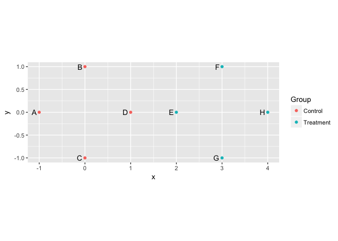

This package provides useful functions for distance matrix objects in R.

Installation
You can install usedist from github with:
# install.packages("devtools")
devtools::install_github("kylebittinger/usedist")Introduction to distance matrices in R
In R, the dist() function is used to compute a distance matrix. But the result you get back isn’t really a matrix, it’s a "dist" object. Under the hood, the "dist" object is stored as a simple vector. When it’s printed out, R knows how to make it look like a matrix. Let’s make a distance object representing the distances between six rows of data.
Here is our data matrix, X:
## [,1] [,2] [,3] [,4] [,5]
## A 1.2629543 -0.928567035 -1.1476570 0.4356833 -0.05710677
## B -0.3262334 -0.294720447 -0.2894616 -1.2375384 0.50360797
## C 1.3297993 -0.005767173 -0.2992151 -0.2242679 1.08576936
## D 1.2724293 2.404653389 -0.4115108 0.3773956 -0.69095384
## E 0.4146414 0.763593461 0.2522234 0.1333364 -1.28459935
## F -1.5399500 -0.799009249 -0.8919211 0.8041895 0.04672617And here is our "dist" object, d, representing the distance between rows of X:
d <- dist(X)
d## A B C D E
## B 2.603430
## C 1.821423 2.047355
## D 3.472394 3.727228 3.056922
## E 2.672239 2.653173 2.734967 2.069155
## F 2.843420 2.543180 3.369470 4.373791 3.129488These "dist" objects are great, but R does not provide a set of functions to work with them conveniently. That’s where the usedist package comes in.
Working with “dist” objects
The usedist package provides some basic functions for altering or selecting distances from a "dist" object.
library(usedist)To start, we can make a new "dist" object, containing the distances between rows B, C, F, and D. Our new object contains the rows in the order we specified:
dist_subset(d, c("B", "C", "F", "D"))This is especially helpful when arranging a distance matrix to match a data frame, for instance with the adonis() function in vegan.
We can extract distances between specified pairs of rows. For example, we’ll pull out the distances for rows A-to-D, B-to-E, and C-to-F. To extract specific distance values, we use dist_get(). This function takes two vectors of row labels: one vector for the rows of origin, and another for the rows of destination.
origin_row <- c("A", "B", "C")
destination_row <- c("D", "E", "F")
dist_get(d, origin_row, destination_row)If rows are arranged in groups, we might like to have a data frame listing the distances alongside the groups for each pair of rows. The dist_groups() function makes a data frame from the groups, and also adds in a nice label that you might use for plots.
item_groups <- rep(c("Control", "Treatment"), each=3)
dist_groups(d, item_groups)## Item1 Item2 Group1 Group2 Label Distance
## 1 A B Control Control Within Control 2.603430
## 2 A C Control Control Within Control 1.821423
## 3 A D Control Treatment Between Control and Treatment 3.472394
## 4 A E Control Treatment Between Control and Treatment 2.672239
## 5 A F Control Treatment Between Control and Treatment 2.843420
## 6 B C Control Control Within Control 2.047355
## 7 B D Control Treatment Between Control and Treatment 3.727228
## 8 B E Control Treatment Between Control and Treatment 2.653173
## 9 B F Control Treatment Between Control and Treatment 2.543180
## 10 C D Control Treatment Between Control and Treatment 3.056922
## 11 C E Control Treatment Between Control and Treatment 2.734967
## 12 C F Control Treatment Between Control and Treatment 3.369470
## 13 D E Treatment Treatment Within Treatment 2.069155
## 14 D F Treatment Treatment Within Treatment 4.373791
## 15 E F Treatment Treatment Within Treatment 3.129488You might have your own distance function that you’d like to use, beyond the options available in dist() or vegan::vegdist(). For example, the RMS distance is kind of like the Euclidean distance, but you take the mean of the squared differences instead of the sum inside the square root. Let’s define the distance function:
Then, we can pass it to dist_make() to create a new distance matrix of RMS distances.
dist_make(X, rms_distance)Centroid functions
The usedist package contains functions for computing the distance to group centroid positions. This is accomplished without finding the location of the centroids themselves, though it is assumed that some high-dimensional Euclidean space exists where the centroids can be situated. References for the formulas used can be found in the function documentation.
To illustrate, let’s create a set of points in 2-dimensional space. Four points will be centered around the origin, and four around the point (3, 0).
pts <- data.frame(
x = c(-1, 0, 0, 1, 2, 3, 3, 4),
y = c(0, 1, -1, 0, 0, 1, -1, 0),
Item = LETTERS[1:8],
Group = rep(c("Control", "Treatment"), each=4))
library(ggplot2)
ggplot(pts, aes(x=x, y=y)) +
geom_point(aes(color=Group)) +
geom_text(aes(label=Item), hjust=1.5) +
coord_equal()
Our goal is to figure out distances for the group centroids using only the distances between points. First, we need to put the data in matrix format.
Now, we’ll compute the point-to-point distances with dist().
pts_distances <- dist(pts_matrix)
pts_distances## A B C D E F G
## B 1.414214
## C 1.414214 2.000000
## D 2.000000 1.414214 1.414214
## E 3.000000 2.236068 2.236068 1.000000
## F 4.123106 3.000000 3.605551 2.236068 1.414214
## G 4.123106 3.605551 3.000000 2.236068 1.414214 2.000000
## H 5.000000 4.123106 4.123106 3.000000 2.000000 1.414214 1.414214The function dist_between_centroids() will calculate the distance between the centroids of the two groups. Here, we expect to get a distance of 3.
dist_between_centroids(
pts_distances, c("A", "B", "C", "D"), c("E", "F", "G", "H"))The function is only using the distance matrix; it doesn’t know where the individual points are in space.
We can use another function, dist_to_centroids(), to calculate the distance from each individual point to the group centroids. Again, this works without knowing the point locations, only the distances between points. In our example, the distances within the Control group and within the Treatment group should all be equal to 1.
dist_to_centroids(pts_distances, pts$Group)## Item CentroidGroup CentroidDistance
## 1 A Control 1.000000
## 2 B Control 1.000000
## 3 C Control 1.000000
## 4 D Control 1.000000
## 5 E Control 2.000000
## 6 F Control 3.162278
## 7 G Control 3.162278
## 8 H Control 4.000000
## 9 A Treatment 4.000000
## 10 B Treatment 3.162278
## 11 C Treatment 3.162278
## 12 D Treatment 2.000000
## 13 E Treatment 1.000000
## 14 F Treatment 1.000000
## 15 G Treatment 1.000000
## 16 H Treatment 1.000000You can use the Pythagorean theorem to check that the other distances are correct. The distance between point “G” and the centroid for the Control group should be sqrt(32 + 12) = sqrt(10) = 3.162278.
Long format data
Many times, the data is not stored as a matrix, but is represented in “long” format as a data frame. In this case, one column of the data frame gives the row label for the matrix, another indicates the column label, and a third provides the value. To get a real data matrix, we have to “pivot” the data frame and convert to matrix form. Because this is such a common operation, usedist includes a convenience function, pivot_to_matrix().
Here is an example of data in long format:
data_long <- data.frame(
row_id = c("A", "A", "A", "B", "B", "C", "C"),
column_id = c("x", "y", "z", "x", "y", "y", "z"),
value = rpois(7, 12))
data_long## row_id column_id value
## 1 A x 11
## 2 A y 10
## 3 A z 10
## 4 B x 9
## 5 B y 7
## 6 C y 15
## 7 C z 10The data table has no value for row “B” and column “z”. By default, a value of 0 is filled in for missing combinations when we convert to matrix format. Here is how we convert:
data_matrix <- pivot_to_matrix(data_long, row_id, column_id, value)
data_matrixNote that we provide bare column names in the call to pivot_to_matrix(). This function requires some extra packages to be installed. They are listed as suggestions for usedist. If the additional packages are not installed on your system, you’ll get an error message with the missing packages listed.
The matrix format is what we need for distance calculations. If you want to convert from long format and use a custom distance function, you can combine pivot_to_matrix() with dist_make():
dist_make(data_matrix, rms_distance)Parallelization
Distance calculations can get computationally expensive with large sample sizes. With the installation of future.apply package, you cna compute the distances in parallel to save time.
future::plan(future::multisession)
dist_make(data_matrix, rms_distance)